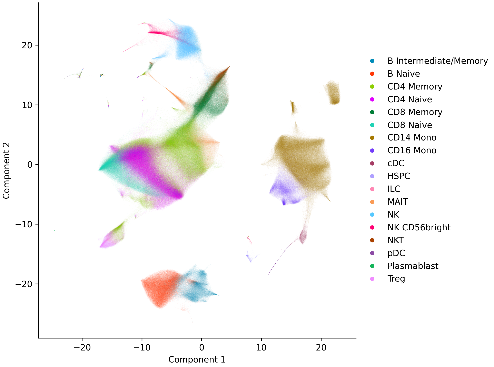
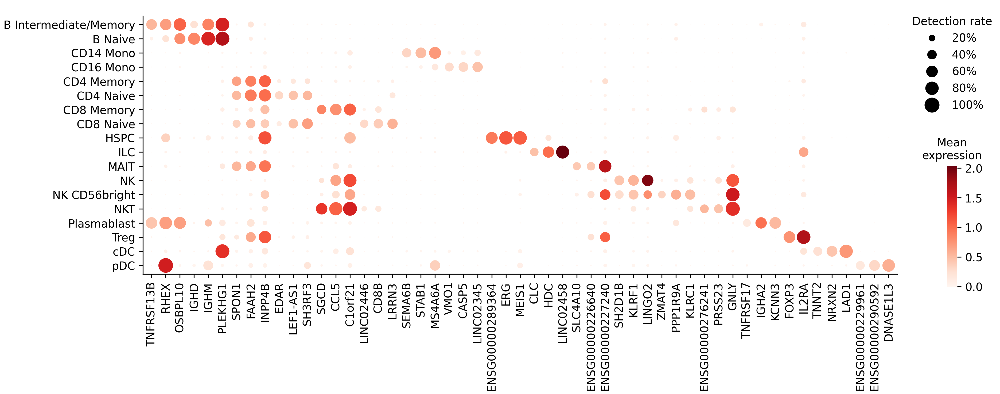

Basic Workflow#
This tutorial walks through a standard single-cell analysis from start to finish: loading data, quality control, feature selection, normalization, dimensionality reduction, clustering, embedding, and marker gene identification.
Dataset#
We use a ~10 million cell PBMC cytokine stimulation dataset from Parse Biosciences. Cryopreserved PBMCs from twelve healthy donors were seeded at 1 million cells per well in 96-well plates — one plate per donor — and treated with 90 different cytokines or PBS control for 24 hours, yielding 1,092 experimental conditions. Although this dataset is already quality-filtered, we run QC here to demonstrate the workflow.
Setup#
SingleCell is brisc’s main class. It represents a single-cell dataset — the count matrix along with metadata for each cell and gene — and provides the methods for working with it. These methods return a new dataset rather than changing it in place, so assign the result to keep it (sc = sc.qc()).
from brisc import SingleCell
import polars as pl
# Download the data
from subprocess import run
run('wget -nc https://parse-wget.s3.us-west-2.amazonaws.com/10m/'
'Parse_10M_PBMC_cytokines.h5ad',
shell=True)
Loading data#
SingleCell supports reading and writing files from each of the three major single-cell ecosystems:
scverse/Scanpy AnnData (
.h5ad)Seurat (
.rdsand.h5Seurat)Bioconductor SingleCellExperiment (
.rds)
as well as raw 10x data files (.h5 or .mtx/.mtx.gz). See Interoperability for details on format conversion, partial loading, and the ryp Python-R bridge.
Inspecting the file
Inspect an .h5ad file’s structure with ls() to see what’s inside — its dimensions and the available obs/var columns — without loading the data.
SingleCell.ls('Parse_10M_PBMC_cytokines.h5ad')
X: 9,697,974 × 40,352 sparse array with 18,830,591,942 non-zero elements, data type 'float32', and first non-zero element = 1
obs: _index, bc1_well, bc1_wind, bc2_well, bc2_wind, bc3_well, bc3_wind, cell_type, cytokine, donor, gene_count, log1p_n_genes_by_counts,
log1p_total_counts, log1p_total_counts_MT, mread_count, pct_counts_MT, sample, species, total_counts_MT, treatment, tscp_count
var: _index, n_cells
num_threads controls parallelism for this load and all subsequent operations on the dataset. The default (-1) uses all available cores. On shared machines like HPC clusters, setting an explicit value avoids contention with other jobs. It can also be set per step, or changed on the dataset at any time through the num_threads property (sc.num_threads = 8).
obs_columns is optional — it loads only the named metadata columns instead of all of them. Omit it to load every column; here we keep just the ones used later in the workflow.
sc = SingleCell(
'Parse_10M_PBMC_cytokines.h5ad', num_threads=-1,
obs_columns=['sample', 'donor', 'cell_type', 'treatment', 'cytokine'])
A quick look at what was loaded:
sc.peek_obs()
column value
_index 89_103_005__s1
sample Donor10_4-1BBL
donor Donor10
cell_type CD8 Naive
treatment cytokine
cytokine 4-1BBL
shape: (6, 2)
sc.peek_var()
column value
_index TSPAN6
n_cells 15700
shape: (2, 2)
Quality control#
qc() filters low-quality cells. The default filters are:
>5% mitochondrial reads
<100 genes detected
Zero MALAT1 expression — this nuclear lncRNA is ubiquitously expressed; absence indicates empty droplets or cytoplasmic fragments.
sc = sc.qc(subset=False, allow_float=True)
Starting with 9,697,974 cells.
Filtering to cells with ≤5.0% mitochondrial counts...
9,443,200 cells remain after filtering to cells with ≤5.0% mitochondrial counts.
Filtering to cells with ≥100 genes detected (with non-zero count)...
9,443,200 cells remain after filtering to cells with ≥100 genes detected.
Filtering to cells with non-zero MALAT1 expression...
9,443,163 cells remain after filtering to cells with non-zero MALAT1 expression.
Adding a Boolean column, obs['passed_QC'], indicating which cells passed QC...
The pipeline assumes raw integer counts, so qc() errors on floating-point input — a guard against running on normalized data. This dataset’s raw counts are stored as float32, so we pass allow_float=True to allow them; only do this when your values are genuinely raw counts stored as floats.
subset=False (the default) keeps all cells and adds a passed_QC column to obs — downstream methods automatically ignore flagged cells via their QC_column argument. subset=True instead removes failing cells, but roughly doubles peak memory by copying X.
print(sc.obs)
shape: (9_697_974, 7)
┌──────────────────┬────────────────┬─────────┬───────────────────────┬───────────┬──────────┬───────────┐
│ _index ┆ sample ┆ donor ┆ cell_type ┆ treatment ┆ cytokine ┆ passed_QC │
│ --- ┆ --- ┆ --- ┆ --- ┆ --- ┆ --- ┆ --- │
│ str ┆ enum ┆ enum ┆ enum ┆ enum ┆ enum ┆ bool │
╞══════════════════╪════════════════╪═════════╪═══════════════════════╪═══════════╪══════════╪═══════════╡
│ 89_103_005__s1 ┆ Donor10_4-1BBL ┆ Donor10 ┆ CD8 Naive ┆ cytokine ┆ 4-1BBL ┆ true │
│ 89_103_083__s1 ┆ Donor10_4-1BBL ┆ Donor10 ┆ B Naive ┆ cytokine ┆ 4-1BBL ┆ true │
│ 89_103_085__s1 ┆ Donor10_4-1BBL ┆ Donor10 ┆ B Intermediate/Memory ┆ cytokine ┆ 4-1BBL ┆ false │
│ 89_104_009__s1 ┆ Donor10_4-1BBL ┆ Donor10 ┆ CD14 Mono ┆ cytokine ┆ 4-1BBL ┆ true │
│ 89_104_025__s1 ┆ Donor10_4-1BBL ┆ Donor10 ┆ CD14 Mono ┆ cytokine ┆ 4-1BBL ┆ true │
│ … ┆ … ┆ … ┆ … ┆ … ┆ … ┆ … │
│ 61_186_093__s144 ┆ Donor9_VEGF ┆ Donor9 ┆ CD4 Memory ┆ cytokine ┆ VEGF ┆ true │
│ 61_186_108__s144 ┆ Donor9_VEGF ┆ Donor9 ┆ CD14 Mono ┆ cytokine ┆ VEGF ┆ true │
│ 61_186_135__s144 ┆ Donor9_VEGF ┆ Donor9 ┆ CD8 Naive ┆ cytokine ┆ VEGF ┆ true │
│ 61_186_157__s144 ┆ Donor9_VEGF ┆ Donor9 ┆ CD8 Naive ┆ cytokine ┆ VEGF ┆ true │
│ 61_186_168__s144 ┆ Donor9_VEGF ┆ Donor9 ┆ B Intermediate/Memory ┆ cytokine ┆ VEGF ┆ true │
└──────────────────┴────────────────┴─────────┴───────────────────────┴───────────┴──────────┴───────────┘
Exploring QC metrics
To explore data quality before filtering — for instance, to choose thresholds or make plots — qc_metrics() adds num_counts, num_genes, and mito_fraction columns to obs. This is optional; qc() calculates its own filters internally.
sc = sc.qc_metrics(allow_float=True)
print(sc.obs.select('num_counts', 'num_genes', 'mito_fraction').describe())
┌────────────┬─────────────┬─────────────┬───────────────┐
│ statistic ┆ num_counts ┆ num_genes ┆ mito_fraction │
│ --- ┆ --- ┆ --- ┆ --- │
│ str ┆ f64 ┆ f64 ┆ f64 │
╞════════════╪═════════════╪═════════════╪═══════════════╡
│ count ┆ 9.697974e6 ┆ 9.697974e6 ┆ 9.697974e6 │
│ null_count ┆ 0.0 ┆ 0.0 ┆ 0.0 │
│ mean ┆ 4372.856645 ┆ 1941.703694 ┆ 0.020779 │
│ std ┆ 3870.176441 ┆ 934.460866 ┆ 0.01191 │
│ min ┆ 436.0 ┆ 399.0 ┆ 0.0 │
│ 25% ┆ 2014.0 ┆ 1274.0 ┆ 0.012927 │
│ 50% ┆ 3320.0 ┆ 1795.0 ┆ 0.018277 │
│ 75% ┆ 5379.0 ┆ 2417.0 ┆ 0.025636 │
│ max ┆ 70055.0 ┆ 7000.0 ┆ 0.149981 │
└────────────┴─────────────┴─────────────┴───────────────┘
Customizing thresholds
Each threshold is configurable:
sc = sc.qc(
max_mito_fraction=0.10, min_genes=200, nonzero_MALAT1=False, allow_float=True)
Removing doublets
Doublet removal is off by default, and we skip it here because this dataset’s doublets were already removed. To enable it, pass remove_doublets=True to score and drop predicted doublets via cxds, with batch_column to score within each sequencing batch:
sc = sc.qc(remove_doublets=True, batch_column='sample', allow_float=True)
To get doublet scores without dropping any cells, run find_doublets() after qc. It adds doublet and doublet_score columns to obs for you to inspect or threshold yourself.
sc = sc.find_doublets(batch_column='sample')
Feature selection#
hvg() selects highly variable genes using Seurat’s variance-stabilization approach. It operates on raw counts and must be run before normalize(). By default, it selects the top 2,000 genes.
When your data has multiple batches, pass batch_column to identify HVGs that are variable across batches:
sc = sc.hvg(batch_column='donor')
This adds highly_variable and highly_variable_rank columns to var. pca() then uses only these genes, and the steps after it build on the resulting PCs.
print(sc.var.filter(pl.col('highly_variable')).sort('highly_variable_rank'))
shape: (2_000, 4)
┌─────────────────┬─────────┬─────────────────┬──────────────────────┐
│ _index ┆ n_cells ┆ highly_variable ┆ highly_variable_rank │
│ --- ┆ --- ┆ --- ┆ --- │
│ str ┆ i64 ┆ bool ┆ u32 │
╞═════════════════╪═════════╪═════════════════╪══════════════════════╡
│ IGHA1 ┆ 193374 ┆ true ┆ 1 │
│ IGKC ┆ 814041 ┆ true ┆ 2 │
│ CEMIP ┆ 666595 ┆ true ┆ 3 │
│ ZNF385D ┆ 141736 ┆ true ┆ 4 │
│ FN1 ┆ 230969 ┆ true ┆ 5 │
│ … ┆ … ┆ … ┆ … │
│ CDH15 ┆ 2021 ┆ true ┆ 1996 │
│ CD84 ┆ 3640179 ┆ true ┆ 1997 │
│ KLRC2 ┆ 383626 ┆ true ┆ 1998 │
│ ENSG00000283648 ┆ 189431 ┆ true ┆ 1999 │
│ ENSG00000254092 ┆ 34573 ┆ true ┆ 2000 │
└─────────────────┴─────────┴─────────────────┴──────────────────────┘
Normalization#
normalize() corrects for differences in sequencing depth, then log-transforms the counts. The default method, log1pPF (Ahlmann-Eltze and Huber 2023), scales each cell by its library size relative to the mean library size (proportional fitting) before applying a log1p transformation. With method='PFlog1pPF', a second round of proportional fitting is applied after log1p (Booeshaghi et al. 2022). With method='logCP10k', it matches Seurat’s NormalizeData().
sc = sc.normalize()
PCA#
pca() computes principal components from the normalized, highly variable genes, storing them in obsm['pca']. The default num_PCs is 50.
sc = sc.pca()
Note
When running single-threaded (num_threads=1), brisc’s PCA defaults to a different order of operations than the multi-threaded path. It’s roughly twice as fast and uses less memory than the single-threaded path that matches the multi-threaded result bit-for-bit, but the floating-point output differs slightly from the multi-threaded run. Pass match_parallel=True (only valid with num_threads=1) to get bit-exact agreement with a multi-threaded run:
sc = sc.pca(num_threads=1, match_parallel=True)
Integrating batches
If your data spans several batches (different samples, donors, or runs), integrate them by adding harmonize() after PCA — it removes the batch differences from the PCs into obsm['harmony']. The steps after PCA then read from it via PC_key='harmony' (they default to 'pca'):
To integrate separate datasets — for example, mapping an annotated reference onto a query — see Integration and Label Transfer.
Nearest neighbors#
brisc builds a neighbor graph in two steps:
neighbors() finds each cell’s num_neighbors (default 20) nearest neighbors using a fast approximate search, storing their indices in obsm['neighbors'] and the distances in obsm['distances'].
shared_neighbors() then builds the shared nearest neighbor (SNN) graph, connecting two cells in proportion to how many neighbors they share, and stores it in obsm['shared_neighbors'].
sc = sc.neighbors().shared_neighbors()
Note
If you subset your data after computing neighbors (e.g. via filter_obs()), the neighbor graph becomes invalid and must be recomputed. brisc enforces this and will raise an error if you try to use stale neighbors.
Clustering#
cluster() runs Leiden clustering on the SNN graph. The resolution parameter controls granularity — higher values produce more clusters. You can pass multiple resolutions to evaluate them in parallel:
sc = sc.cluster(resolution=[0.25, 0.5, 1.0, 1.5, 2.0])
Each resolution adds a column to obs: cluster_0 through cluster_4 (or a custom name via cluster_column).
Embedding#
brisc offers three embedding methods for visualization:
pacmap()— PaCMAP, captures global structure well. Default choice.localmap()— LocalMAP, balances local and global structure.umap()— the standard UMAP algorithm.
Parallelizing UMAP
UMAP’s optimization runs single-threaded by default, which keeps the embedding reproducible. Pass hogwild=True to parallelize it with lock-free Hogwild! SGD — faster on large datasets, but no longer reproducible (runs vary slightly even at a fixed seed). It needs more than one thread, so set num_threads (-1 for all cores):
sc = sc.umap(hogwild=True, num_threads=-1)
sc = sc.pacmap()
Embeddings are stored as 2-column NumPy arrays in obsm (e.g. obsm['pacmap']). Visualize any of them with plot_embedding(), passing the embedding key, a column to color by, and a filename to save to (omit the filename to show the plot interactively instead):
sc.plot_embedding('pacmap', 'cell_type', 'pacmap.png')
{kind=link}

Marker genes#
find_markers() finds each cell type’s marker genes: those detected in most of its cells but few others. Adapted from Fischer and Gillis 2021, it looks only at whether each gene is detected, not how strongly it is expressed, so raw and normalized counts give the same result.
markers = sc.find_markers('cell_type')
print(markers.head())
shape: (5, 4)
┌───────────────────────┬───────────┬────────────────┬─────────────┐
│ cell_type ┆ gene ┆ detection_rate ┆ fold_change │
│ --- ┆ --- ┆ --- ┆ --- │
│ enum ┆ str ┆ f32 ┆ f32 │
╞═══════════════════════╪═══════════╪════════════════╪═════════════╡
│ B Intermediate/Memory ┆ TNFRSF13B ┆ 0.51232 ┆ 83.725471 │
│ B Intermediate/Memory ┆ RHEX ┆ 0.578583 ┆ 25.170784 │
│ B Intermediate/Memory ┆ OSBPL10 ┆ 0.696673 ┆ 14.058088 │
│ B Intermediate/Memory ┆ MS4A1 ┆ 0.883335 ┆ 14.050449 │
│ B Intermediate/Memory ┆ BANK1 ┆ 0.973397 ┆ 7.943513 │
└───────────────────────┴───────────┴────────────────┴─────────────┘
Each row is a marker gene. detection_rate is the fraction of that cell type’s cells in which the gene is detected; fold_change is how much more often it’s detected in that type than elsewhere. By default, a gene is a marker if detection_rate ≥ 0.25 (min_detection_rate) and fold_change ≥ 2 (min_fold_change).
The table holds only marker genes; pass all_genes=True to include every gene, with a marker column flagging the selected ones.
plot_markers() draws a dot plot of chosen genes across cell types, sizing each dot by detection rate and coloring it by expression (or by fold change with color='fold_change'). Since markers is already sorted by descending fold change, maintain_order=True makes head(3) take the three strongest per type:
top = markers.group_by('cell_type', maintain_order=True).head(3)
sc.plot_markers(top['gene'], 'cell_type', 'markers.png')
{kind=link}

Saving#
save() writes to multiple supported formats: .h5ad, .rds, .h5Seurat, .h5, or .mtx. See Interoperability.
It won’t overwrite an existing file unless you pass overwrite=True.
sc.save('processed.h5ad', overwrite=True)
Because we ran QC with subset=False, the saved file includes every cell, with passed_QC flagging the ones that passed. To save only those cells, run qc() with subset=True, or filter the dataset first:
sc.filter_obs('passed_QC').save('processed.h5ad', overwrite=True)
Pipeline summary#
Because each method returns a new dataset, the full pipeline chains together:
sc = SingleCell('data.h5ad', num_threads=-1)\
.qc(allow_float=True)\
.hvg(batch_column='donor')\
.normalize()\
.pca()\
.neighbors()\
.shared_neighbors()\
.cluster(resolution=[0.25, 0.5, 1.0, 1.5, 2.0])\
.pacmap()
sc.plot_embedding('pacmap', 'cell_type', 'pacmap.png')
markers = sc.find_markers('cell_type')
sc.plot_markers(markers['gene'], 'cell_type', 'markers.png')
sc.save('processed.h5ad', overwrite=True)
Step |
Method |
What it does |
|---|---|---|
Load |
Read data from any supported format |
|
Quality control |
Filter low-quality cells |
|
Feature selection |
Select top 2,000 highly variable genes |
|
Normalization |
log1pPF log-normalization |
|
PCA |
50 principal components |
|
Neighbors |
20 nearest neighbors + SNN graph |
|
Clustering |
Leiden clustering at multiple resolutions |
|
Embedding |
2D PaCMAP embedding |
|
Plot embedding |
Scatter plot of an embedding |
|
Markers |
Marker genes per cell type |
|
Plot markers |
Dot plot of marker genes |
|
Save |
Write to |